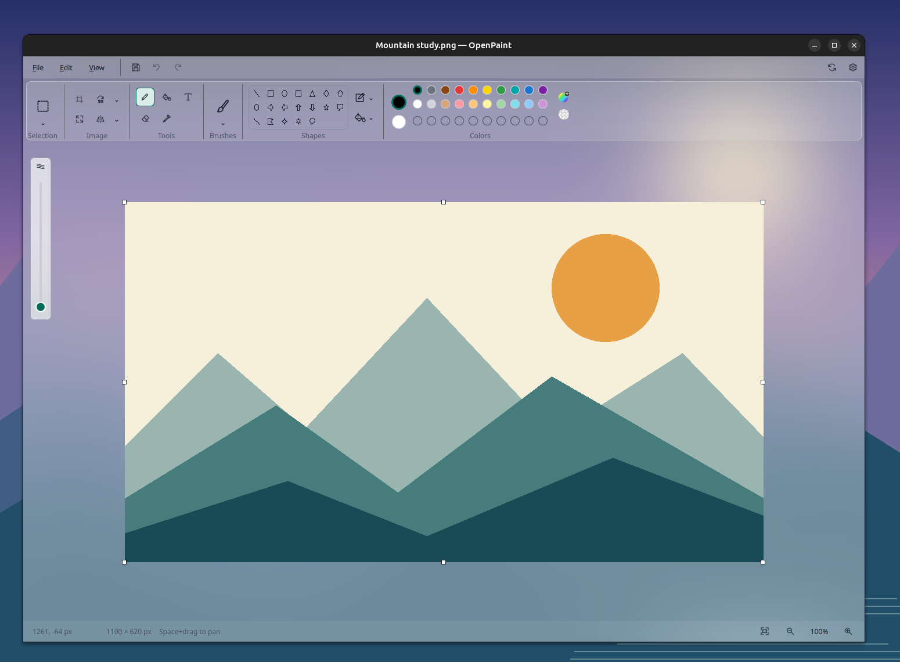
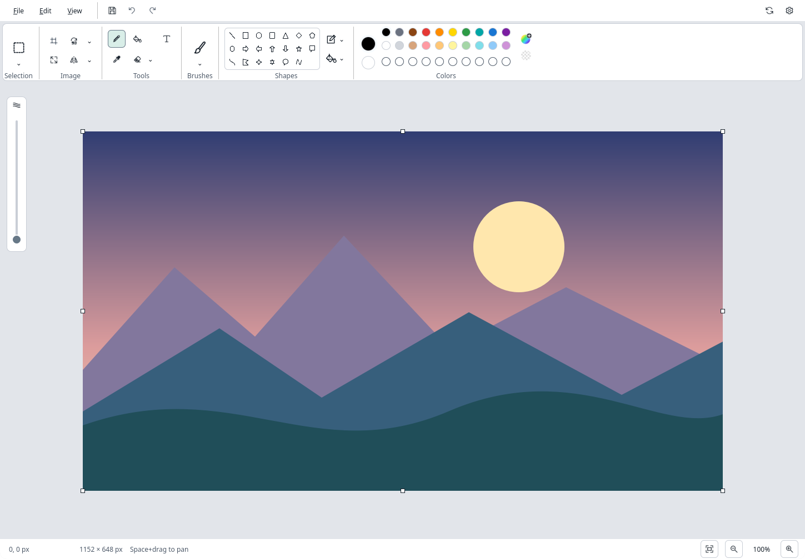

Give OpenPaint a softer background with optional desktop blur.


Desktop-specific instructions will appear here. Some setups also need an extension enabled after installation.
Installation command · pending desktop validationOptional. You can keep painting with your current appearance.
Next version · Stable release
Designer: Afshin Kashani, PhD, P.Eng
Ready to check for updates.
Download and install updates manually using your installation method.
Checks GitHub for stable releases. GitHub receives your IP address and ordinary request metadata; no artwork or document information is sent.